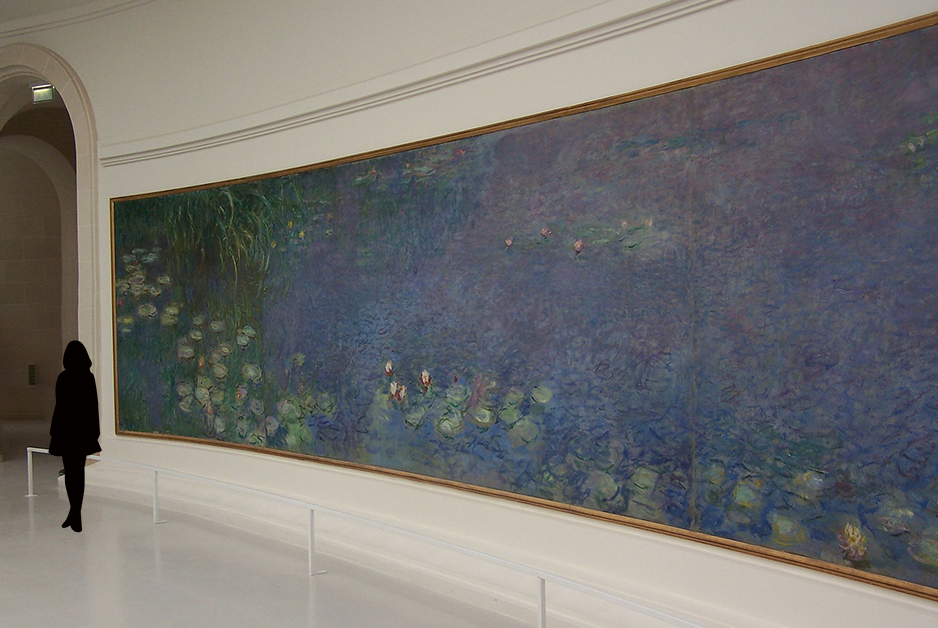
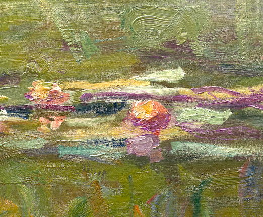

今、伝えたいモネのよさ
ここでは鑑賞するときのポイントをお伝えします
実際に美術館でモネ作品を見つけたら、ぜひ思い出してみてください

point 1
サイズ感
この作品は200×1,275 cmととても大きいです。近くで見るともやもやとしていて色が並んでいるだけのように見えます。そこで後ろへ数歩下がってみてください。急に鮮明に絵画が現れ、鑑賞できると思います。

point 2
筆づかい
こちらは別作品の《睡蓮》の一部分です。モネの作品にはふんだんに絵具が使われ、キャンバスに凹凸があります。この筆触は実際に見ないと分からないため、ぜひ直接見てほしいポイントです。

point 3
移ろうモチーフ
モネの描くテーマは時代によって変遷していきます。睡蓮を描く前は、変動が激しかった時代の人々を描いています。しかし次第に人間を取り囲む自然にモチーフが変わっていくのです。どちらも「移ろいやすいもの」としてモネの興味を強くひくものでした。